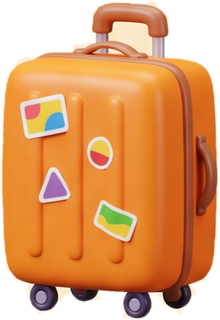
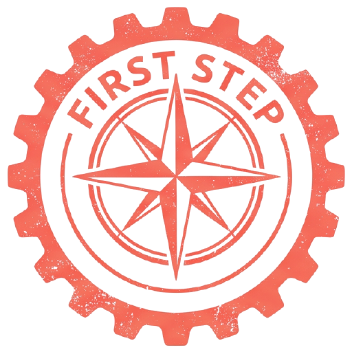
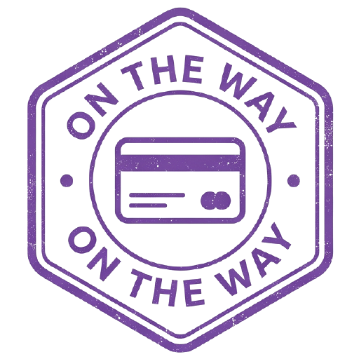

Визы и ВНЖ
Шенген, Великобритания, США, Япония, ВНЖ Испании и Португалии. Анкета за 10 минут, цена без сюрпризов.
Визы · ВНЖ · Путешествия
Подайте заявку за 10 минут, следите за каждым этапом, общайтесь с куратором и собирайте штампы стран в своём паспорте путешественника.
Что умеет приложение
Шенген, Великобритания, США, Япония, ВНЖ Испании и Португалии. Анкета за 10 минут, цена без сюрпризов.
Чат прямо в приложении: проверка документов, ответы на вопросы, файлы. Менеджер отвечает в течение рабочего дня.
Каждый этап на виду: от проверки документов до готового паспорта. Статус обновляется сам.
Авиабилеты, гостиницы и трансфер из аэропорта, чтобы собрать поездку целиком.
За каждую страну — штамп в паспорт путешественника. Собрали серию — получили скидку.

Альбом фото по странам и сообщество, где делятся впечатлениями и советуют, куда поехать.
Направления
Поверните компас в приложении, и страна оживёт: сакура в Японии, воздушные шары над Стамбулом, фонарики в Бангкоке.
Паспорт путешественника
Штамп ставится за реальные шаги: первую заявку, оплату, завершённую поездку. Четыре серии, редкие и легендарные оттиски, а за собранную серию — персональный промокод.
Сообщество
Неделя в Дубае в ноябре. Виза пришла за 4 дня, куратор всё проверил заранее.
Куда лучше поехать в Японии весной, кроме Токио? Хочу сакуру без толп.
Ольга: Киото и Нара в будни, и озеро Кавагутико с видом на Фудзи.


Открыто 4 из 13 печатей. Серия «Первые шаги» собрана.
Примеры публикаций вымышлены. В сообществе есть модерация, жалобы и скрытие авторов; документы и личные данные публиковать нельзя.
Как это работает
Покрутите компас или проверьте шансы на визу за минуту.
10 минут в приложении, черновик сохраняется сам.
Правки, счёт и запись в визовый центр — в чате.
Документы готовы, штамп в паспорте, можно собирать чемодан.
Приложение готовится к публикации в магазинах. Ссылки появятся здесь в день релиза.
Для команды и заказчика